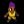

| - | Character | Speed | - | - | Score | - |
|---|---|---|---|---|---|---|
| Aria | 10:12.70 | 129th | 3579 | 1370th | ||
| Bard | 4:56.62 | 147th | 27918 | 26th | ||
|  | Bolt | 6:08.66 | 137th | 3263 | 457th | |
| Cadence | 7:26.10 | 169th | - | - | ||
| Diamond | 4:59.33 | 45th | 3976 | 2951st | ||
| Dorian | 5:46.40 | 114th | 2791 | 790th | ||
| Dove | 4:03.81 | 129th | 274 | 3658th | ||
| Eli | 8:46.39 | 68th | 2638 | 2283rd | ||
| Mary | 12:23.54 | 170th | 2927 | 1208th | ||
| Melody | 7:30.42 | 149th | - | - | ||
| Monk | 11:46.47 | 111th | 4478 | 1556th | ||
| Nocturna | 9:11.87 | 127th | 15562 | 276th | ||
| Tempo | 5:31.90 | 80th | 3763 | 1593rd | ||
| Coda | - | - | 4 | 476th | ||
| Story | 1:09:38.03 | 191st | 11581 | 971st | ||
| 9char | - | - | 1643 | 1529th | ||
| 13char | 3:28:03.95 | 62nd | 33787 | 105th |
| - | Character | HrdSp | NRSp | RndSp | PhsSp | MysSp | - | HrdSc | NRSc | RndSc | PhsSc | MysSc | DLess |
|---|---|---|---|---|---|---|---|---|---|---|---|---|---|
| Aria | - | - | - | - | - | - | - | - | - | - | - | ||
| Bard | - | - | - | - | - | - | - | - | - | - | - | ||
| Bolt | - | - | - | - | - | - | - | - | - | - | - | ||
| Cadence | - | 30:40.48778th | 17:49.33117th | 10:48.6950th | - | - | 3653833rd | 30241889th | 3616752nd | 2157676th | - | ||
| Diamond | - | - | - | 10:22.0952nd | 24:25.4266th | - | - | - | 2730180th | 484824th | - | ||
| Dorian | - | - | - | - | - | - | - | - | - | - | - | ||
| Dove | - | - | - | - | - | - | - | - | - | - | - | ||
| Eli | - | - | - | - | - | - | - | - | - | - | - | ||
| Mary | - | - | - | - | - | - | - | - | - | - | - | ||
| Melody | 18:11.4352nd | - | - | 8:55.1549th | - | 1830315th | 31455th | - | 1232565th | - | - | ||
| Monk | - | - | - | - | - | - | - | - | - | - | - | ||
| Nocturna | 16:52.5282nd | 19:28.0030th | - | 12:27.5836th | - | 38442929th | 2635119th | - | 2159823rd | - | - | ||
| Tempo | - | - | - | - | - | - | - | - | - | - | - | ||
| Coda | - | - | - | - | - | - | - | - | - | - | - |
Last Updated:2021/05/16 10:21